library(tidyverse)
library(palmerpenguins)
library(nycflights13)Problem Session 4
Exploratory Data Analysis
Packages
We’ll work with two datasets today:
penguinsfrompalmerpenguins— measurements on 344 penguins across three speciesflightsfromnycflights13— over 300,000 flights departing NYC in 2013
Contingency Table
We’ll use the flights dataset to practice creating contingency tables. First, use glimpse() to remind yourself what variables are available.
glimpse(flights)Rows: 336,776
Columns: 19
$ year <int> 2013, 2013, 2013, 2013, 2013, 2013, 2013, 2013, 2013, 2…
$ month <int> 1, 1, 1, 1, 1, 1, 1, 1, 1, 1, 1, 1, 1, 1, 1, 1, 1, 1, 1…
$ day <int> 1, 1, 1, 1, 1, 1, 1, 1, 1, 1, 1, 1, 1, 1, 1, 1, 1, 1, 1…
$ dep_time <int> 517, 533, 542, 544, 554, 554, 555, 557, 557, 558, 558, …
$ sched_dep_time <int> 515, 529, 540, 545, 600, 558, 600, 600, 600, 600, 600, …
$ dep_delay <dbl> 2, 4, 2, -1, -6, -4, -5, -3, -3, -2, -2, -2, -2, -2, -1…
$ arr_time <int> 830, 850, 923, 1004, 812, 740, 913, 709, 838, 753, 849,…
$ sched_arr_time <int> 819, 830, 850, 1022, 837, 728, 854, 723, 846, 745, 851,…
$ arr_delay <dbl> 11, 20, 33, -18, -25, 12, 19, -14, -8, 8, -2, -3, 7, -1…
$ carrier <chr> "UA", "UA", "AA", "B6", "DL", "UA", "B6", "EV", "B6", "…
$ flight <int> 1545, 1714, 1141, 725, 461, 1696, 507, 5708, 79, 301, 4…
$ tailnum <chr> "N14228", "N24211", "N619AA", "N804JB", "N668DN", "N394…
$ origin <chr> "EWR", "LGA", "JFK", "JFK", "LGA", "EWR", "EWR", "LGA",…
$ dest <chr> "IAH", "IAH", "MIA", "BQN", "ATL", "ORD", "FLL", "IAD",…
$ air_time <dbl> 227, 227, 160, 183, 116, 150, 158, 53, 140, 138, 149, 1…
$ distance <dbl> 1400, 1416, 1089, 1576, 762, 719, 1065, 229, 944, 733, …
$ hour <dbl> 5, 5, 5, 5, 6, 5, 6, 6, 6, 6, 6, 6, 6, 6, 6, 5, 6, 6, 6…
$ minute <dbl> 15, 29, 40, 45, 0, 58, 0, 0, 0, 0, 0, 0, 0, 0, 0, 59, 0…
$ time_hour <dttm> 2013-01-01 05:00:00, 2013-01-01 05:00:00, 2013-01-01 0…One-way table
Create a one-way contingency table showing the number of flights from each origin airport. Try both the Base R table() approach and the tidyverse approach.
# Base R
table(flights$origin)
EWR JFK LGA
120835 111279 104662 # tidyverse
flights |>
group_by(origin) |>
summarise(count = n())# A tibble: 3 × 2
origin count
<chr> <int>
1 EWR 120835
2 JFK 111279
3 LGA 104662Two-way table
Now cross origin with carrier. Use group_by() + summarise() and then pivot_wider() to display it in wide format with carriers across the top.
table(flights$carrier)
9E AA AS B6 DL EV F9 FL HA MQ OO UA US
18460 32729 714 54635 48110 54173 685 3260 342 26397 32 58665 20536
VX WN YV
5162 12275 601 table(flights$origin)
EWR JFK LGA
120835 111279 104662 flights |>
group_by(origin, carrier) |>
summarise(count = n(), .groups = "drop") |>
pivot_wider(names_from = carrier, values_from = count, values_fill = 0)# A tibble: 3 × 17
origin `9E` AA AS B6 DL EV MQ OO UA US VX WN
<chr> <int> <int> <int> <int> <int> <int> <int> <int> <int> <int> <int> <int>
1 EWR 1268 3487 714 6557 4342 43939 2276 6 46087 4405 1566 6188
2 JFK 14651 13783 0 42076 20701 1408 7193 0 4534 2995 3596 0
3 LGA 2541 15459 0 6002 23067 8826 16928 26 8044 13136 0 6087
# ℹ 4 more variables: HA <int>, F9 <int>, FL <int>, YV <int>Numerical Summaries
Let’s use the penguins dataset to practice numerical summaries.
Compute the mean and standard deviation of body_mass_g for each species. Don’t forget to handle missing values!
penguins |>
group_by(species) |>
summarise(mean = mean(body_mass_g, na.rm = T),
sd = sd(body_mass_g, na.rm = T))# A tibble: 3 × 3
species mean sd
<fct> <dbl> <dbl>
1 Adelie 3701. 459.
2 Chinstrap 3733. 384.
3 Gentoo 5076. 504.Now extend this using across() to compute the same statistics for all numeric columns at once, still grouped by species.
penguins |>
group_by(species) |>
summarise(across(where(is.numeric),
list(mean = ~ mean(.x, na.rm =T),
sd= ~sd(.x, na.rm = T)),
.names = "{.fn}_{.col}"
))# A tibble: 3 × 11
species mean_bill_length_mm sd_bill_length_mm mean_bill_depth_mm
<fct> <dbl> <dbl> <dbl>
1 Adelie 38.8 2.66 18.3
2 Chinstrap 48.8 3.34 18.4
3 Gentoo 47.5 3.08 15.0
# ℹ 7 more variables: sd_bill_depth_mm <dbl>, mean_flipper_length_mm <dbl>,
# sd_flipper_length_mm <dbl>, mean_body_mass_g <dbl>, sd_body_mass_g <dbl>,
# mean_year <dbl>, sd_year <dbl>ggplot
Now let’s explore the penguins dataset with some plots.
Histogram
Make a histogram of penguin body mass. Set an appropriate binwidth. Pull up the help file for geom_histogram() if you need a reminder on the argument name.
penguins |>
ggplot(aes(x = body_mass_g)) +
geom_histogram(binwidth = 200) +
labs(x = "Body Mass (g)", y = "Count",
title = "Distribution of Penguin Body Mass")Warning: Removed 2 rows containing non-finite outside the scale range
(`stat_bin()`).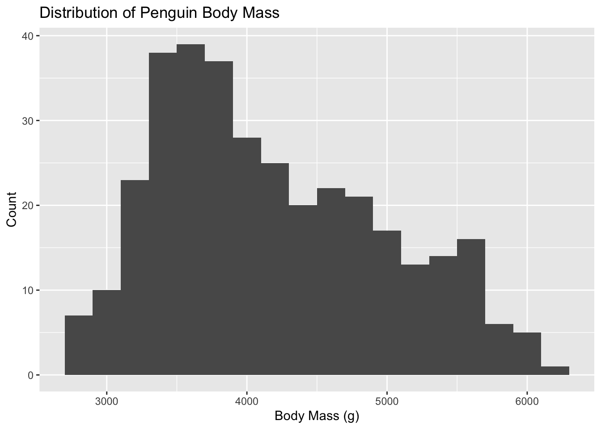
Scatterplot
Create a scatterplot of body_mass_g (x) vs. flipper_length_mm (y).
penguins |>
ggplot(aes(x = body_mass_g, y = flipper_length_mm)) +
geom_point()Warning: Removed 2 rows containing missing values or values outside the scale range
(`geom_point()`).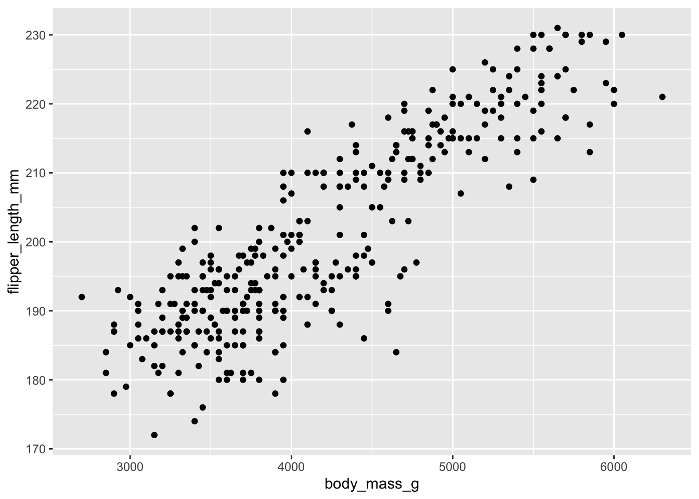
penguins |>
ggplot(aes(x = body_mass_g, y = flipper_length_mm, color = species)) +
geom_jitter()Warning: Removed 2 rows containing missing values or values outside the scale range
(`geom_point()`).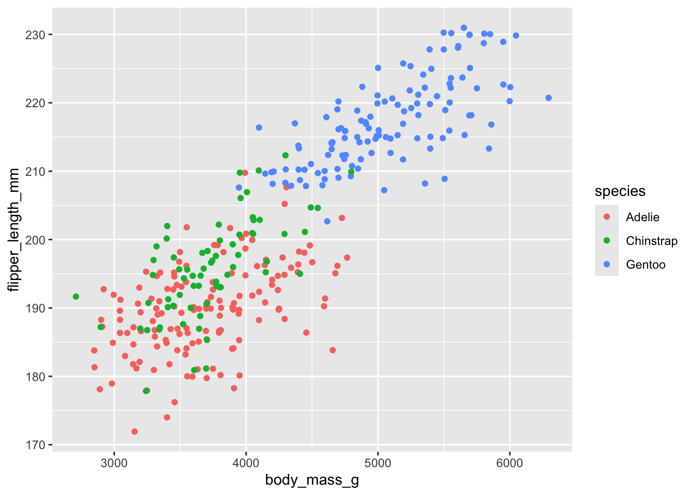
Note: aesthetic is a visual property of one of the objects in your plot. Aesthetic options are:
– shape
– color
– size
– fill
Question: What happens if we put color as an argument directly in our geom instead of inside aes()? Try setting color = "blue" inside geom_point(), then try mapping color = species inside aes(). What’s the difference?
Formatting
What if your legend goes off the page (this may be an issue on your project…)? We can use the guides() function to control it. Try adding the following to your scatterplot:
guides(color = guide_legend(ncol = 2))
Talk through what each part of this code is doing, then add it to your scatterplot above.
penguins |>
ggplot(aes(x = body_mass_g, y = flipper_length_mm, color = species)) +
geom_jitter() +
guides(color = guide_legend(ncol = 2))Warning: Removed 2 rows containing missing values or values outside the scale range
(`geom_point()`).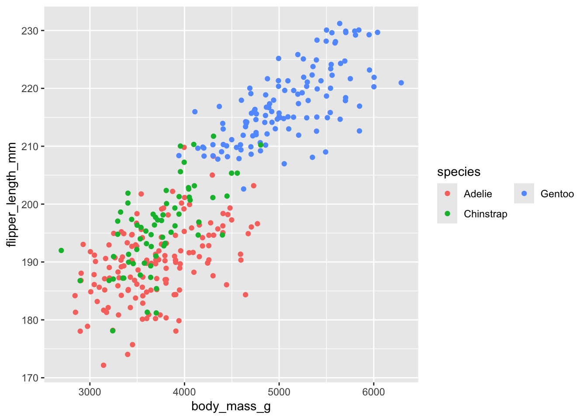
For an additional resource, see here.
Labels
Good labels are critical for making your plots accessible to a wider audience. Always ensure the axis and legend labels display the full variable name.
labs() is the function. Common arguments to set are:
– x
– y
– title
– subtitle
– caption
penguins |>
ggplot(aes(x = body_mass_g, y = flipper_length_mm, color = species)) +
geom_jitter() +
labs(x = "Body Mass (g)", y = "Flipper Length (mm)", color = "Species",
title = "Scatterplot of Body Mass vs Flipper Length by Species")Warning: Removed 2 rows containing missing values or values outside the scale range
(`geom_point()`).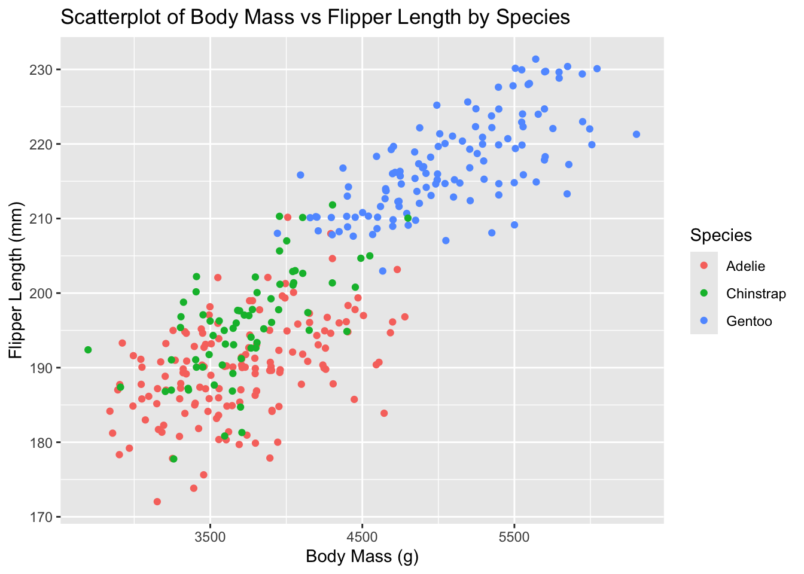
What if your axis labels are long? Sometimes it’s better to rotate them! We can do that using the theme() function:
theme(axis.text.x = element_text(angle = 90, vjust = 0.5))
penguins |>
ggplot(aes(x = body_mass_g, y = flipper_length_mm, color = species)) +
geom_jitter() +
labs(x = "Body Mass (g)", y = "Flipper Length (mm)", color = "Species",
title = "Scatterplot of Body Mass vs Flipper Length by Species") +
theme(axis.text.x = element_text(angle = 90, vjust= 0.5))Warning: Removed 2 rows containing missing values or values outside the scale range
(`geom_point()`).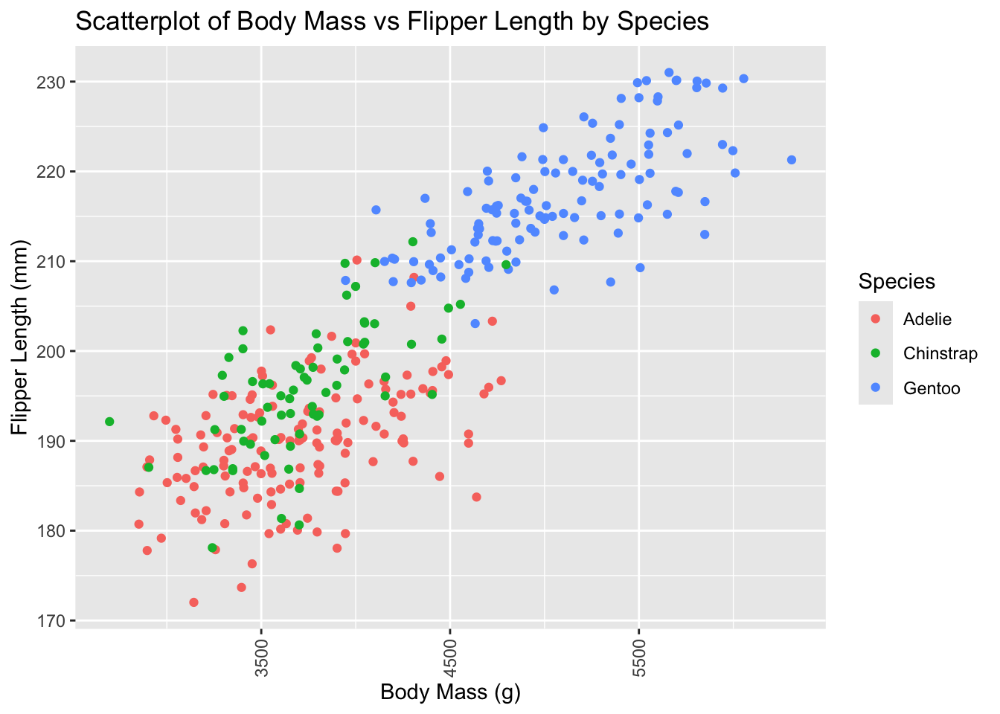
What if your title is too long? We can fix this by putting \n in your title text. Try it!
penguins |>
ggplot(aes(x = body_mass_g, y = flipper_length_mm, color = species)) +
geom_jitter() +
labs(x = "Body Mass (g)", y = "Flipper Length (mm)", color = "Species",
title = "Scatterplot of Body Mass vs \nFlipper Length by Species") +
theme(axis.text.x = element_text(angle = 90, vjust= 0.5))Warning: Removed 2 rows containing missing values or values outside the scale range
(`geom_point()`).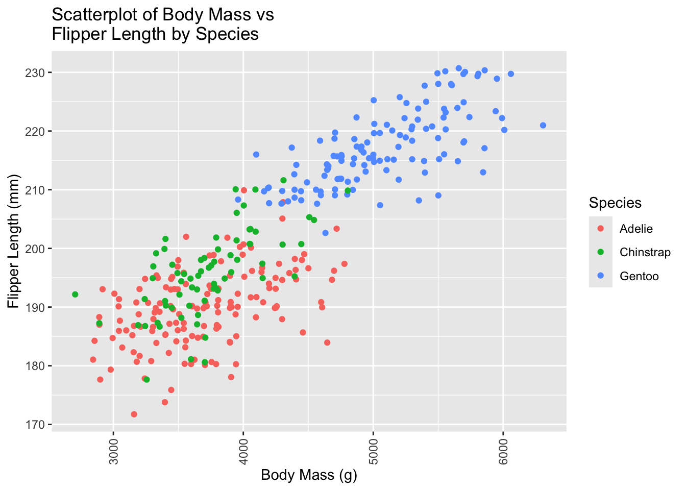
Custom Themes
We can use the theme() function for a lot of things — font, color, bold text, and more. One powerful trick: we can save a theme as an R object and add it to any plot with +.
wolftheme <- theme(
plot.title = element_text(family = "Helvetica", face = "bold", size = 20),
legend.title = element_text(colour = "red", face = "bold.italic", family = "Helvetica"),
legend.text = element_text(face = "italic", colour = "darkred", family = "Helvetica"),
axis.title = element_text(family = "Helvetica", size = 10, colour = "darkred"),
axis.text = element_text(family = "Courier", colour = "black", size = 10)
)
# save your scatterplot as an R object and add the wolf theme to it using +p <- penguins |>
ggplot(aes(x = body_mass_g, y = flipper_length_mm, color = species)) +
geom_jitter() +
labs(x = "Body Mass (g)", y = "Flipper Length (mm)", color = "Species",
title = "Scatterplot of Body Mass vs \nFlipper Length by Species")
p + wolfthemeWarning: Removed 2 rows containing missing values or values outside the scale range
(`geom_point()`).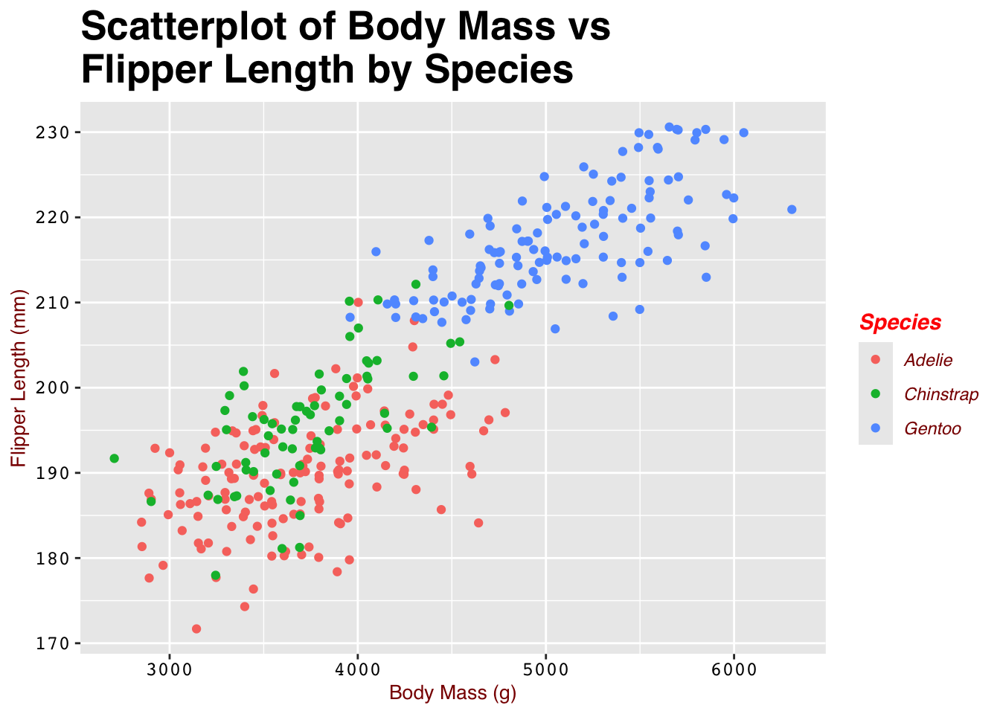
Break Apart a Plot by a Variable
Consider this histogram below:
penguins |>
ggplot(aes(x = body_mass_g, fill = species)) +
geom_histogram(binwidth = 200, alpha = 0.5)Warning: Removed 2 rows containing non-finite outside the scale range
(`stat_bin()`).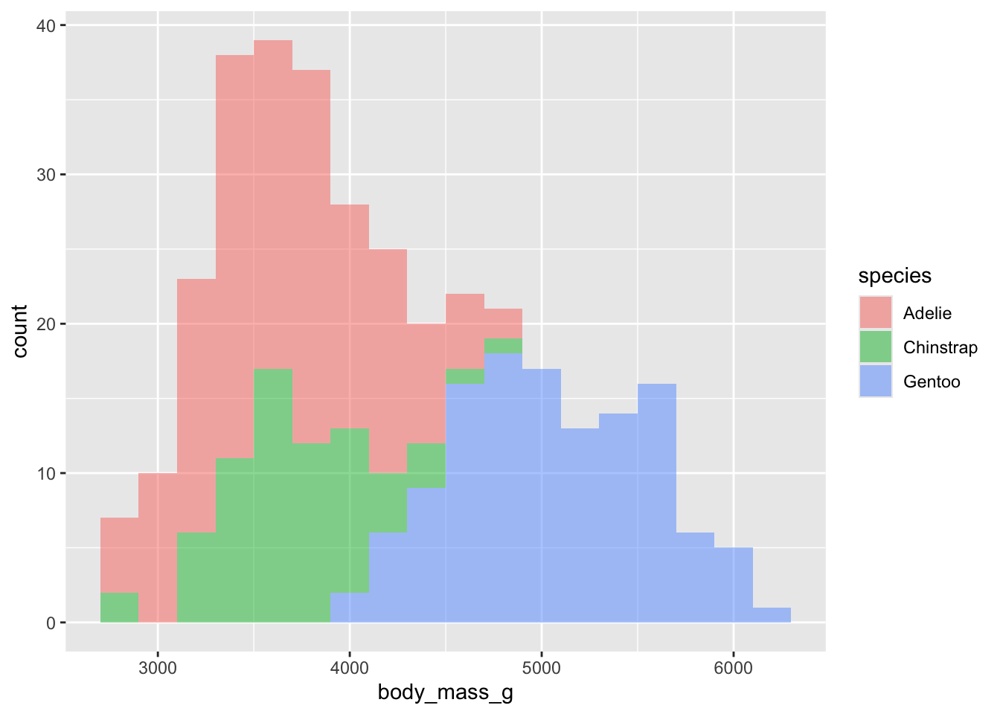
What if we don’t want the overlap? We can use facet_wrap() to split the plot into panels! This function takes the name of the variable you want to split by, and how many cols/rows you want. Note: the syntax for this function is ~variable.name.
Run ?facet_wrap in your console to see the name of the row and column arguments.
Add facet_wrap() as a layer below, breaking the plot apart by species.
penguins |>
ggplot(aes(x = body_mass_g, fill = species)) +
geom_histogram(binwidth = 200, alpha = 0.5) +
facet_wrap(~species, ncol = 3)Warning: Removed 2 rows containing non-finite outside the scale range
(`stat_bin()`).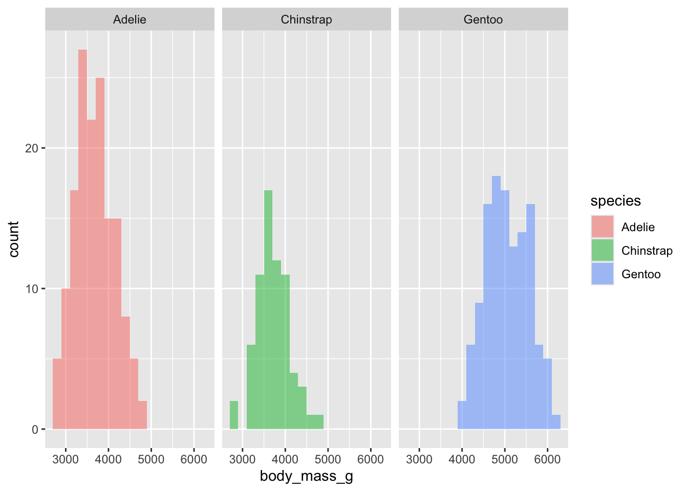
Break Apart by More Than One Variable
Now let’s make a scatterplot between bill_length_mm and bill_depth_mm. Color the points by species and shape the points by island.
penguins |>
ggplot(aes(x = bill_length_mm, y = bill_depth_mm, color = species, shape = island)) +
geom_point(alpha = 0.7)Warning: Removed 2 rows containing missing values or values outside the scale range
(`geom_point()`).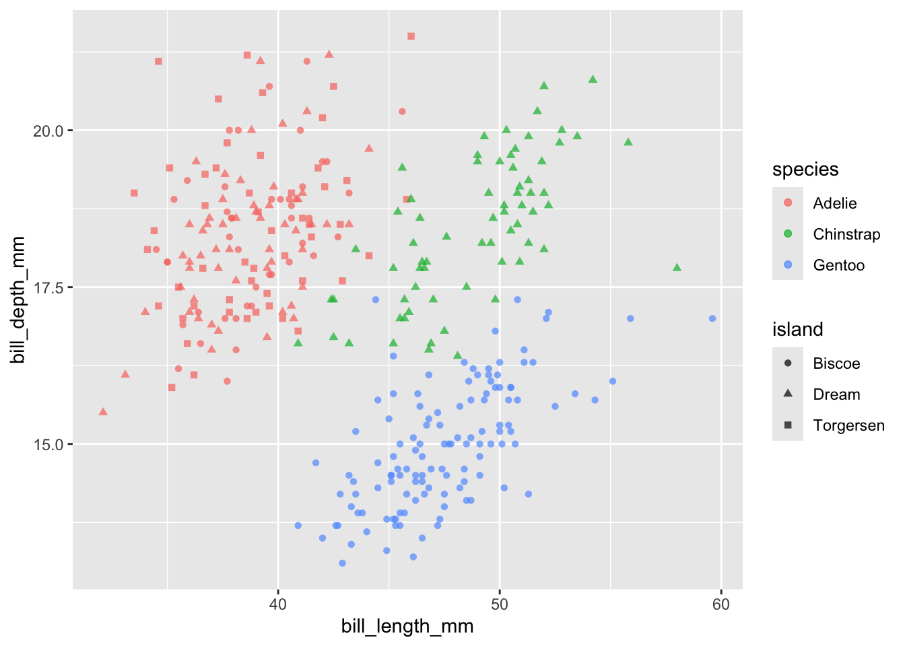
Here, we are going to introduce facet_grid(). It’s a lot like facet_wrap(), but allows us to break our plots apart by more than one variable. The syntax for facet_grid() is variable1 ~ variable2. Try breaking the plot above by both species AND island.
penguins |>
ggplot(aes(x = bill_length_mm, y = bill_depth_mm, color = species, shape = island)) +
geom_point(alpha = 0.7) +
facet_grid(species ~ island)Warning: Removed 2 rows containing missing values or values outside the scale range
(`geom_point()`).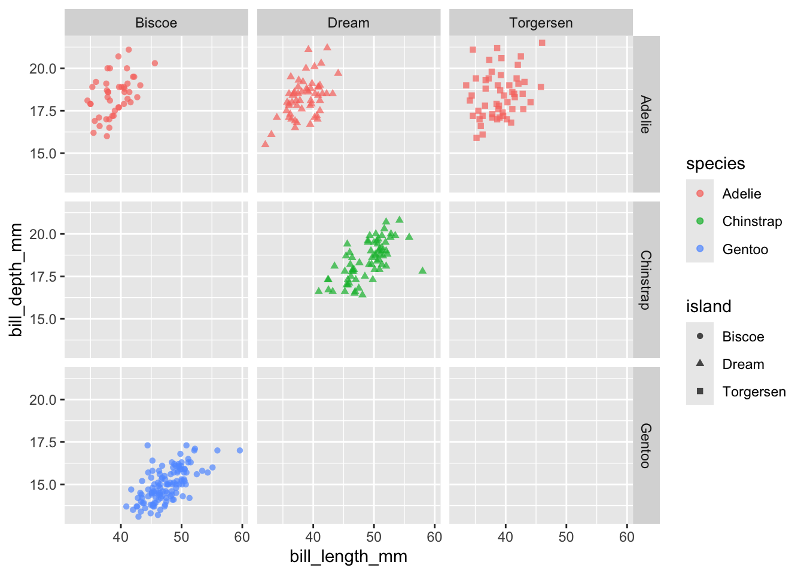
For more information on the difference, please reference this stackoverflow link.
Fill vs. Color
Change fill to color below and re-run the code. What happened?
penguins |>
ggplot(aes(x = body_mass_g, fill = species)) +
geom_histogram(binwidth = 200, alpha = 0.7) +
facet_wrap(~species, nrow = 3)Warning: Removed 2 rows containing non-finite outside the scale range
(`stat_bin()`).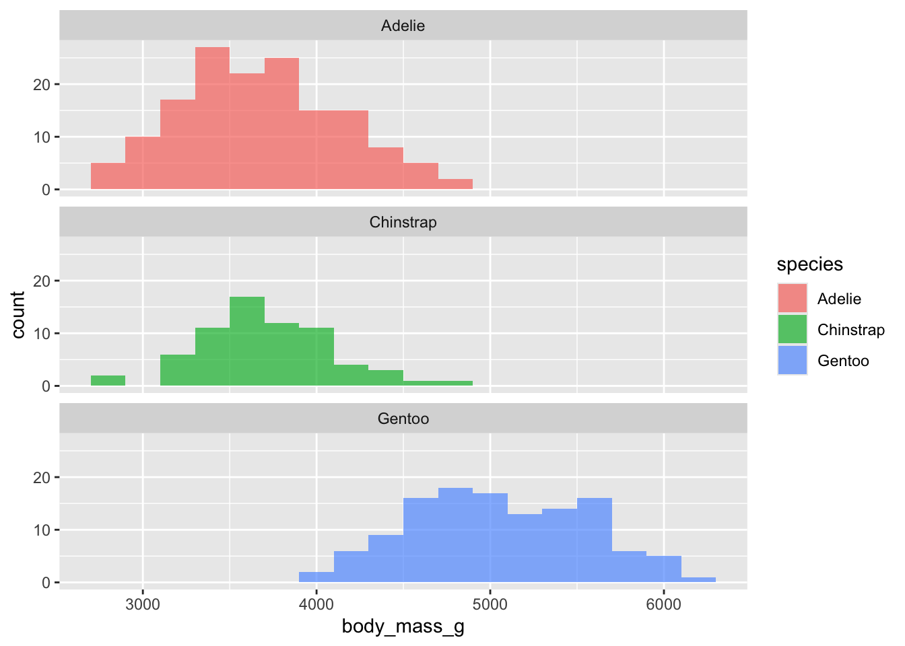
Generally, fill defines the color inside a geom, whereas color defines the color of the outline. However, there is one exception to the rule… points!
Most points plotted are considered too small to have meaningful area inside, so fill won’t work! Try it below:
penguins |>
ggplot(aes(x = bill_length_mm, y = bill_depth_mm, color = species)) +
geom_point()Warning: Removed 2 rows containing missing values or values outside the scale range
(`geom_point()`).
fill and color do act differently when points have a “border”. Shapes 21–25 are shapes that have a border. Use the shape argument within geom_point() to change the shape, and see how it interacts with fill and color.
Recreating a Plot
Let’s start by reading in some data from a URL https://www4.stat.ncsu.edu/~online/datasets/sleep_data.csv. This is a .csv file so it is a comma delimited file. Opening it, we saw that there is a header row and some missing values. But it seems like it should read in just fine with read_csv().
The file at https://www4.stat.ncsu.edu/~online/datasets/sleep_data_info.txt gives the reference for where this data comes from. Let’s recreate the first plot (almost) that we see in that paper.